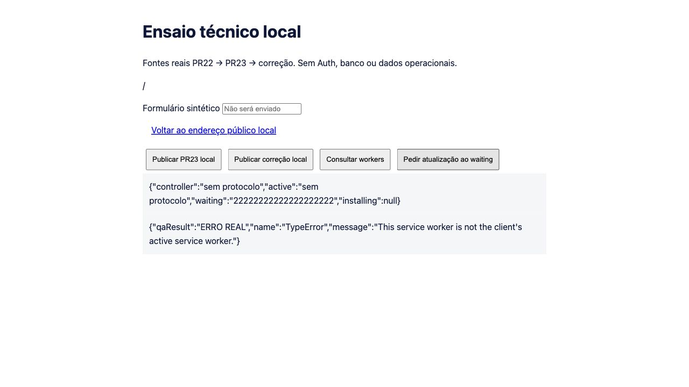
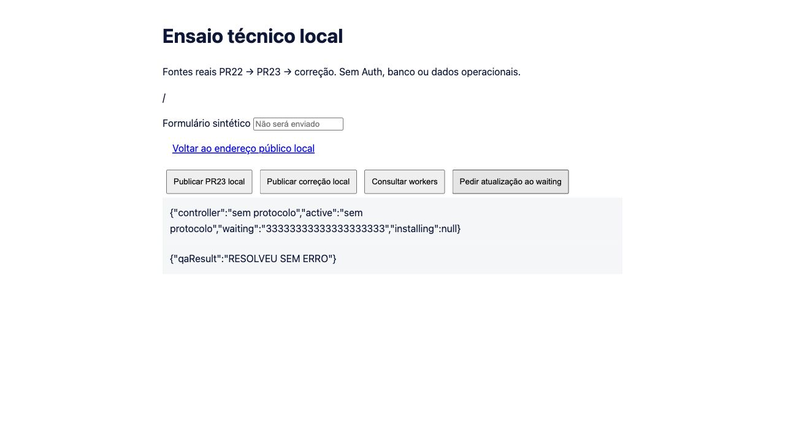

21/11/2026. Produção READY em b6e4b652ed35cba2f31c02573031a2f2b8680b98, deployment dpl_BM38JDzZmR7BAokQbz1d4YP2pR4W.
Resultado: migração observada em produção concluída, mas encontrada uma falha adicional reproduzível. Correção pontual preparada em branch separada, sem merge.
Após recarga normal de uma aba privada legada já sem edição, execução, versão publicada, controller e worker ativo convergiram para bd98762ddf4693ac4c6a. Waiting e installing ausentes. Cache estático próprio terminou somente nessa versão. Sessão legítima preservada. Não houve limpeza de armazenamento, unregister ou extração de credenciais.
| Recurso | HTTP / cache observado |
|---|---|
| Home e /conta | 200 / no-store |
| version.json e sw.js | 200 / no-store |
| Manifesto | 200 / no-cache |
| JS e CSS com hash | 200 / public, max-age=31536000, immutable |
Com worker PR22 ativo, PR23 waiting e uma aba privada legada aberta, o worker em espera tenta executar WindowClient.navigate. Chromium rejeita: This service worker is not the client's active service worker. A restrição é definida na especificação de Service Workers. A reprodução real confirma o erro; o teste anterior permitia navigate indevidamente.
A correção remove essa navegação impossível, mantém a mensagem de adiamento e não ativa globalmente o worker enquanto a página privada legada não puder preservar suas edições. A ponte do worker já ativo permanece. O diagnóstico explica a recarga normal inicial para código legado. O botão antigo ainda pode apresentar timeout: código já carregado não recebe retroativamente o protocolo novo.
Também foi alinhada a classificação de rotas privadas às variações de maiúsculas aceitas pelo React Router, tanto na proteção de atualização quanto no worker. Isso não altera autenticação nem permissões.
| Cenário | Tipo / resultado |
|---|---|
| Aba PR22 de produção → PR23 | Real, Chrome no Mac: convergiu após recarga normal da aba privada já salva; depois a Home antiga convergiu ao retornar. |
| Formulário e sessão | Real, produção: nome sintético e categoria permaneceram ao alternar abas, navegar Home/Buscar/Voltar e colocar Chrome em segundo plano. Nada foi salvo; entrada sintética removida ao final. |
| Visual após retorno | Real, desktop: interface atual permaneceu nos cenários observados, com versões convergentes. Não equivale a garantia para todos os dispositivos. |
| PR22 ativo → PR23 waiting → correção | Real, Chromium localhost, fontes históricas: erro antes; adiamento sem erro e campo preservado depois. Saindo da rota privada legada, worker corrigido ativou; waiting/installing ficaram nulos. |
| Histórico PR19–21 | Regressões automatizadas herdadas do PR23 passaram. Não recriada nesta rodada uma instalação física com todo o percurso 19–22. Versão exata de páginas anteriores ao protocolo pode ser desconhecida. |
| BFCache | Voltar na SPA testado; não comprovado pageshow persisted=true. Restauração física permanece pendente. |
| iPhone / Android físicos | Não executado. Espelhamento do iPhone expirou; nenhum Android acessível. Instalação, abertura pelo ícone, descarte pelo SO e retomada standalone exigem homologação física. |
| Preview antigo | Encontrada aba do antigo Preview Asaas Sandbox. É outra origem/branch e não acompanha main. Preservada; não é prova de cache incorreto na produção. |
Baseline: 466 testes. Correção: 471 testes em 40 arquivos, typecheck e build aprovados. Teste de regressão vermelho antes da mudança reproduz TypeError. Não houve necessidade de nova migração ou alteração SQL.
Reprodução: node scripts/pwa-waiting-qa.mjs; abrir localhost:5198 e /conta em duas abas, preencher campo sintético na privada; publicar PR23 local, consultar waiting e pedir atualização na pública; observar erro. Publicar correção local e repetir: adia sem erro. Voltar a privada para / e repetir: ativa. Instrumentação somente relata o resultado de waitUntil; recursos estáticos são vazios para isolar o ciclo do worker. Não representa teste Auth/SQL.


Nenhuma alteração no Supabase, prestadores, gratuidade, pagamentos, publicação ou configurações financeiras. Nenhum logout ou reset de sessão. Produção permanece no commit solicitado. Recomenda-se revisar o PR pontual e homologar Android/iPhone físicos antes de declarar encerrada a compatibilidade de instalações antigas.
CI e Preview: em acompanhamento. Sem merge e sem deploy de produção.